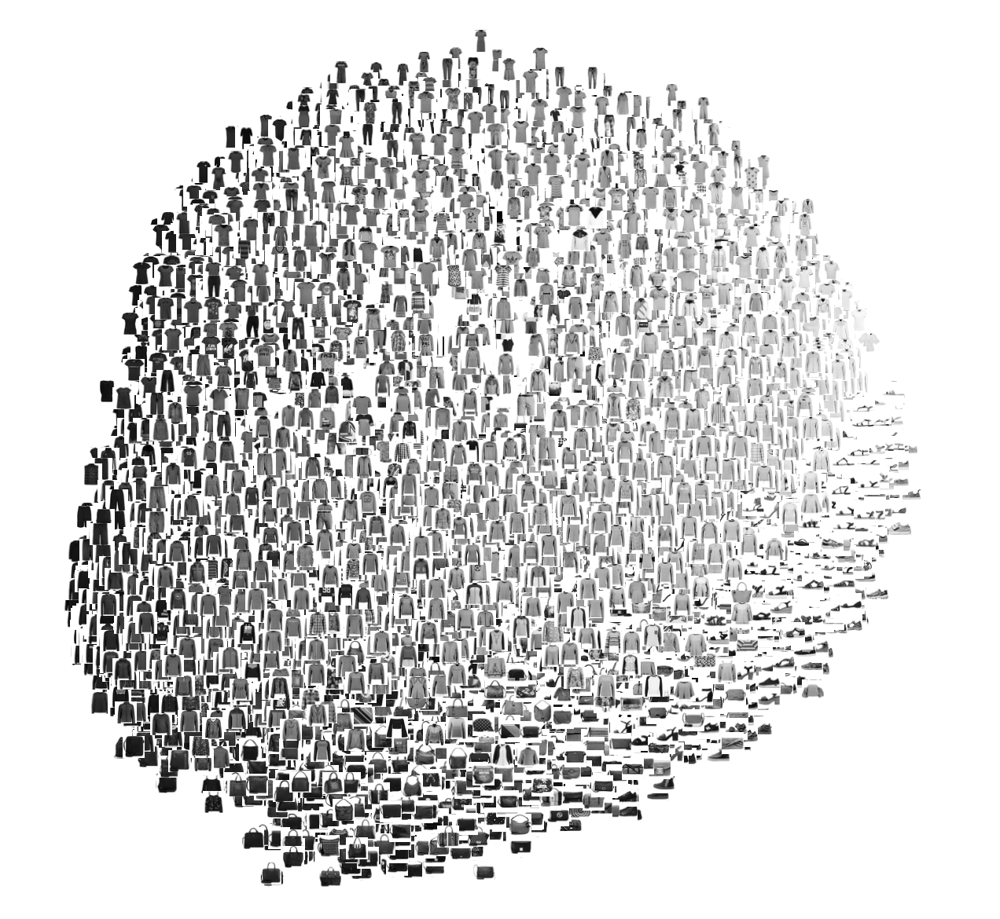
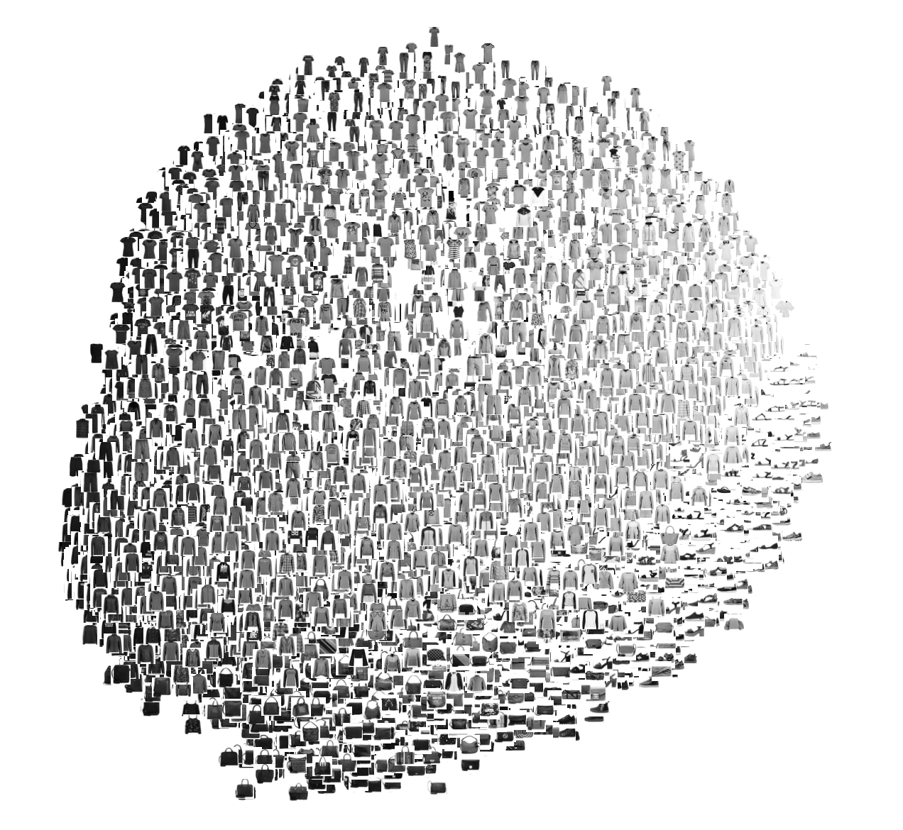

I would like to visualize large public available datasets such as imageNet, Mnist, Fashion-Mnist, plantCLEF to get a quick understanding of how the data is structured and what the indivdual samples look like.
The visualization should be able to show a simple PCA of the images to get an idea of how the most important features compare. Furthermore, the visualization should also be able to visualize the images in clusters after some model have been applied to them. These clusters should be grouped according to their prediction, and inside each cluster, grouped according to their true label. This would allow the user to spot what type of images are classified incorrectly, making it easier to spot outliers.
The intended audience of this visualization would be computer scientist performing machine learning on a large dataset seeking to improve his model by spotting what it incorrectly classified.
A small mockup of the Fashion-MNIST dataset is shown below.

 
